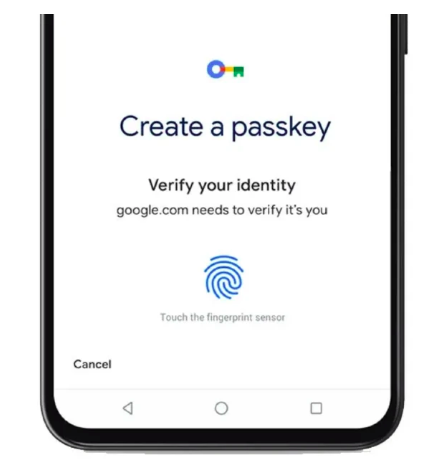
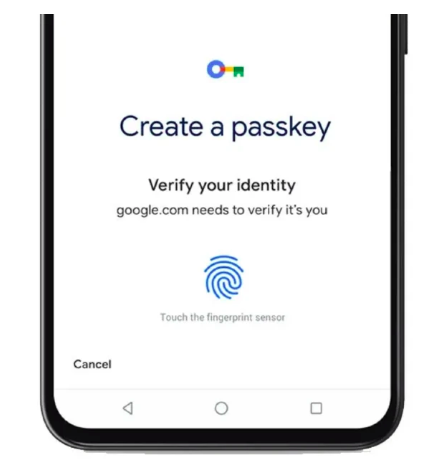

3 Years of passkey
2025 Dec 03
See all posts
3 Years of passkey

(The Passkey UX)
A cryptographic odyssey from the Starknet ecosystem to Ethereum,
from promises to disillusionment and rebirth.
Introduction
Three years. That's how long it took to transform an intuition into
conviction, and then into partial disillusionment. Three years exploring
passkeys, a technology that promised to revolutionize Web3 onboarding.
Here's the story of a team that believed, innovated, and ultimately
pivoted in the face of market and security realities to what is ZKNOX
today.
Part I: The Origins (2022)
From defense to hardware
wallets
In 2022, I left the defense industry to join a leading hardware
wallet manufacturer — a French company that had grown into a unicorn.
The innovation team welcomed me, and I quickly began exploring a subject
I was passionate about: threshold signatures.
My first experiments focused on MuSig2, an
aggregated signature protocol considered the ancestor of FROST (Flexible
Round-Optimized Schnorr Threshold). The architecture was ambitious: the
signer was implemented on the Nano hardware wallet, and the verifier in
Cairo0 — a language notoriously difficult to grasp at
the time, but offering unique properties for proof verification.
Discovering Cartridge
It was during this period that we noticed the work of an
unconventional team: Cartridge, a company developing
gaming infrastructure on Starknet. Their bold project: integrating
passkeys into a Starknet account.
At the time, Account Abstraction was under
discussion for Ethereum but only existed on mainnet on Starknet. This
particularity made the StarkWare ecosystem an ideal testing ground.
"The noncustodial Cartridge Controller is actually a web-based
wallet that interacts with StarkNet. Instead of private keys, it makes
use of Android or Apple Passkeys, which are both based on the WebAuthn
standard."
— Cointelegraph, March 2023
We got in touch with the Cartridge team, and I dove into optimizing
their implementation of secp256r1 (P256) signature
verification on-chain.
The optimization that
changed everything
The problem was clear: verifying a P256 signature on-chain cost a
fortune in gas. The first implementations required about 240,000
computational steps on Starknet.
My optimization work reduced this cost by nearly
50%. This performance attracted attention from the
ecosystem, notably from Braavos, who coined the term
"Hardware Signer" for this approach — terminology that stuck.
"The Hardware Signer utilizes the secure subsystem built-in in
users' device — iPhone's Secure Enclave or Android Phone's Titan HSM –
to protect the account. It generates the keys using an internal True
Random Number Generator (TRNG) and signs messages over the NIST-P256
elliptic curve (secp256r1)."
— Braavos Documentation
StarknetCC Lisbon: The
breakthrough
November 2022 marked a turning point. I presented our results at
StarknetCC in Lisbon, before an audience of developers
and researchers from the ecosystem.
But the highlight of the conference was elsewhere: our team won the
CTF (Capture The Flag) organized alongside the event.
An anecdote illustrates our team's caliber: "Nix" a member of our
employer's security offensive team (the "Donjon"), found an elegant
solution to the hardest problem — a solution requiring only a few
minutes on a laptop, while other teams assumed the challenge had been
brute-forced by powerful servers.
Part II: Expansion to
Ethereum (2023)
EIP-4337:
Account Abstraction arrives on Ethereum
2023 began with a major announcement: EIP-4337
brought Account Abstraction on-chain to Ethereum mainnet. This was the
signal we'd been waiting for.
Our team had a bold idea: export the innovation imagined by Cartridge
for on-chain gaming to Ethereum, but with a more generalist approach.
The goal: create a universal onboarding wallet based on passkeys.
The gas challenge on
Ethereum
The problem was significant. At that time, the gas cost of emulating
the R1 curve (secp256r1) on-chain exceeded 1 million
gas — a prohibitive cost on Ethereum mainnet.
My embedded systems experience proved crucial. Writing in
Yul (the EVM's assembly language) is actually similar
to the low-level optimization I practiced in the defense world. Combined
with my expertise in cryptographic algorithms, this experience allowed
me to develop significant optimizations.
The academic publication
This work was formalized in an academic paper published on
IACR ePrint:
"Speeding up elliptic computations for Ethereum Account
Abstraction"
"Our optimizations rely on EVM dedicated XYZZ elliptic
coordinates system, hacked precomputations, and assembly tricks to cut
from more than 1M to 200K/62K (with or without
precomputations)"
— ePrint 2023/939
The results were spectacular: - 6x reduction for a
version without precomputation - 15x reduction with
precomputation (at the cost of on-chain storage)
Recognition from Clave
This work was praised by the team that would become
Clave, a Turkish project pushing an EIP to integrate
the secp256r1 curve directly into Ethereum nodes. This proposal would
become RIP-7212 (Rollup Improvement Proposal), the
first RIP in Ethereum's history.
"RIP-7212 proposes to create a precompiled contract for the
secp256r1 curve. With RIP-7212 verifying P256 only costs 3450 gas, a
100x reduction from the best non-protocol change option."
— Alchemy Blog
On our side, we made a different bet: with a sufficiently low gas
cost thanks to our optimizations, the solution was immediately
usable, without waiting for an EIP whose adoption would take
years.
History would prove us right on timing: nearly 3 years have passed,
and RIP-7212 is still not universally deployed.
The vision:
Passkeys as an onboarding funnel
At this point, our conviction was strong. We believed that the UX
benefits, coupled with enhanced security (passkey key management in the
secure enclave), represented a tremendous funnel for a
first-time onboarding wallet.
The strategy was clear: 1. Onboard users with a simple, secure
passkey wallet 2. Gradually migrate them to a more complete hardware
wallet 3. Offer a multisig architecture combining passkey and hardware
wallet
The performance was praised by the community. Unfortunately, we
couldn't convince internal stakeholders of this scenario.
Part III: The Smoo.th
Adventure (2023-2024)
Leaving our employer
The decision matured. Our employer was going through difficulties and
initiated voluntary departure plans. The timing was perfect — we
volunteered.
The founding team coalesced around Nicolas Bacca
(btchip), a historic co-founder of our former employer and inventor of
the modern "smartcard for the internet" concept.
ETHGlobal: Validation
Our first step: validate the concept. We won the ETHGlobal
hackathon, which reinforced our conviction. The
FreshCryptoLib, (while not from Bel-Air), we developed
became a reference for on-chain P256 signature verification, before we
forked it to Smooth Crypto Library.
"We extended Smooth Crypto Library, the reference library for
on-chain Passkey validation built by our team."
— ETHGlobal Showcase
Smoo.th: The "Stripe of Web3"
We began designing a transparent onboarding solution:
Smoo.th. The ambition was to become the "Stripe of
Web3" — invisible infrastructure allowing any application to integrate a
wallet in just a few lines of code.
The concept relied on several innovations: - Identity/wallet
separation: Users authenticate via their web2 identity (email,
Google account), the wallet is created in the background
Passkey as signer: The private key is
automatically generated and secured by biometrics (Touch ID, Face
ID)
Account Abstraction: The smart contract wallet
offers flexibility and advanced features
Paymaster: Transactions can be sponsored,
eliminating the need to own crypto
A road full of obstacles
A fundraising phase followed, along with hesitation. We quickly
realized an uncomfortable truth: without distribution,
Go-To-Market is uncertain.
Although we were halfway to our planned raise, we abandoned following
negative VC feedback. The message was clear: the technology is
impressive, but the distribution strategy isn't convincing.
"We've decided not to move forward with Smoo.th - we reconsidered
our go to market strategy during our road show and couldn't figure any
that would be suitable for the growth scenario we envisioned as a
team."
— Nicolas Bacca (@BTChip), Twitter
Coinbase integrates our code
Ironically, simultaneously with our decision to stop Smoo.th,
Coinbase Wallet integrated our open source code (as here
) for P256 verification on chains that don't implement RIP-7212.
Our technical work has impact, but we don't have Coinbase's
distribution power. And even they don't seem to be making their wallet a
cash machine.
Part IV: The Security
Disillusionment
Passkeys aren't what we were
sold
A new fact darkened the picture: passkey security isn't what we
expected.
The initial promise was seductive: private keys are generated and
stored in the phone's secure enclave (Secure Enclave on
iOS, Titan on Android), a hardware environment isolated from the main
processor. This architecture was supposed to guarantee that keys never
leave the device.
Reality is different.
btchip's technical analysis
Nicolas Bacca (btchip) conducted an in-depth analysis
and managed to demonstrate that enclave-to-enclave encryption isn't done
via a secure tunnel. At some point in the iCloud synchronization
process, keys are written in clear text.
This discovery is documented in a technical article with the
evocative title "The good, the bad and the ugly"
(published by SlashID):
"These two security safeguards are lost with passkeys, because,
despite being stored in the Secure Enclave, the private key is exported
to iCloud and hence its strength is only as good as the iCloud recovery
process."
"iOS 16 makes it impossible to use device-bound WebAuthn keys,
effectively downgrading WebAuthn security on Apple devices to an AppleID
reset flow."
— SlashID:
The good, the bad and the ugly of Apple Passkeys
The synchronization
mechanism exposed
Code analysis reveals the mechanism:
When a user enables iCloud Keychain for the first time, the device
establishes a circle of trust and creates a syncing identity for itself.
The syncing identity consists of a private key and a public key.
When a key is marked as kSecAttrSynchronizable, it's no
longer protected by a key that never leaves the device. It's encrypted
with a key that can be reconstructed during iCloud restoration.
"In other words, the private key used to encrypt
kSecAttrSynchronizable keys in the Secure Enclave is backed in iCloud.
As such, when a new device needs to restore the keychain it can
reconstruct the private key."
The impossibility of
verifying provenance
Worse still: Apple has removed the ability to verify authenticator
authenticity. The AAGUID (Authenticator Attestation Global Unique
Identifier) is replaced by zeros, and the attestation statement is
empty.
This means it's impossible to prove: - That the key was generated in
a secure environment - That the key is stored securely - The
authenticator's provenance
For a technology supposed to offer "hardware wallet" level security,
this is a major regression.
Part V: The Pivot to ZKNOX
The accumulation of signals
Facing this accumulation of negative signals:
Distribution: Without distribution power
comparable to giants, it's hard to break through
Security: Passkeys don't deliver on their
promises
Market: Even Coinbase isn't making their wallet
a financial success story
We made a strategic decision: refocus our activities on
generalist R&D rather than "passkey only." Some of
smoo.th cofounders decided to leave the adventure for AI and Defi closer
to direct product development.
The birth of ZKNOX
ZKNOX was born from this reflection. The team was
strengthened by a researcher specializing in Zero-Knowledge Proofs,
expanding our scope to: - Post-quantum cryptography (Dilithium, Falcon)
- Threshold protocols (FROST) - Hardware wallet / blockchain integration
- Zero-knowledge proofs
Our expertise in cryptographic optimization remains our DNA, but we
now apply it to a broader spectrum of challenges.
Conclusion: Lessons from
three years
In the end it was the beginning of my journey from an industry
(defense) to another and my first on-chain steps. Switching from a very
traditional context to the high pic of Serotonine web3 offers was an
amazing chance, as well as all the encounters made along the way.
What we learned
Technology alone isn't enough: Our optimizations
were state of the art, but without distribution, impact remains
limited.
Promised security isn't always real security:
Passkeys seemed like the perfect solution. Technical analysis reveals
significant compromises.
Timing matters as much as technology: RIP-7212
is taking years to be adopted. Our bet on offering an immediately usable
solution was justified.
Open source creates value, even without capture:
Our code is used by Coinbase and others. Impact exists, even if economic
value is captured elsewhere.
The technical legacy
Our work contributed to the ecosystem in several ways: - FCL
(Fresh Crypto Library): Our P256 optimization library became a
reference
Academic paper: XYZZ coordinates techniques are
documented and reusable. To date it is still the fastest generic ECC
implementation, not meant to be limited to secp256r1 but also Jujub,
ed25519 and any other. While r1 makes no more sense with fusaka, it
could still be of some use.
Inspiration for Braavos, Clave and others: Our
approach influenced the ecosystem.
Toward the future
Passkeys remain a promising technology for mainstream onboarding. But
they cannot be the sole security pillar of a crypto wallet.
The future we're building at ZKNOX combines:
Passkeys for onboarding UX
Hardware wallets for long-term security
Threshold signatures for resilience
Post-quantum cryptography for longevity
Zero Knowledge Proofs for privacy and
traditional finance compliance
Three years of passkeys taught us humility in the face of
technological promises, and the necessity of a multi-layered approach to
security.
References
Technical publications
Reference articles
Repositories
Published on the ZKNOX technical blog Author: Renaud
Dubois, CTO
3 Years of passkey
2025 Dec 03 See all posts
(The Passkey UX)
A cryptographic odyssey from the Starknet ecosystem to Ethereum, from promises to disillusionment and rebirth.
Introduction
Three years. That's how long it took to transform an intuition into conviction, and then into partial disillusionment. Three years exploring passkeys, a technology that promised to revolutionize Web3 onboarding. Here's the story of a team that believed, innovated, and ultimately pivoted in the face of market and security realities to what is ZKNOX today.
Part I: The Origins (2022)
From defense to hardware wallets
In 2022, I left the defense industry to join a leading hardware wallet manufacturer — a French company that had grown into a unicorn. The innovation team welcomed me, and I quickly began exploring a subject I was passionate about: threshold signatures.
My first experiments focused on MuSig2, an aggregated signature protocol considered the ancestor of FROST (Flexible Round-Optimized Schnorr Threshold). The architecture was ambitious: the signer was implemented on the Nano hardware wallet, and the verifier in Cairo0 — a language notoriously difficult to grasp at the time, but offering unique properties for proof verification.
Discovering Cartridge
It was during this period that we noticed the work of an unconventional team: Cartridge, a company developing gaming infrastructure on Starknet. Their bold project: integrating passkeys into a Starknet account.
At the time, Account Abstraction was under discussion for Ethereum but only existed on mainnet on Starknet. This particularity made the StarkWare ecosystem an ideal testing ground.
We got in touch with the Cartridge team, and I dove into optimizing their implementation of secp256r1 (P256) signature verification on-chain.
The optimization that changed everything
The problem was clear: verifying a P256 signature on-chain cost a fortune in gas. The first implementations required about 240,000 computational steps on Starknet.
My optimization work reduced this cost by nearly 50%. This performance attracted attention from the ecosystem, notably from Braavos, who coined the term "Hardware Signer" for this approach — terminology that stuck.
StarknetCC Lisbon: The breakthrough
November 2022 marked a turning point. I presented our results at StarknetCC in Lisbon, before an audience of developers and researchers from the ecosystem.
But the highlight of the conference was elsewhere: our team won the CTF (Capture The Flag) organized alongside the event. An anecdote illustrates our team's caliber: "Nix" a member of our employer's security offensive team (the "Donjon"), found an elegant solution to the hardest problem — a solution requiring only a few minutes on a laptop, while other teams assumed the challenge had been brute-forced by powerful servers.
Part II: Expansion to Ethereum (2023)
EIP-4337: Account Abstraction arrives on Ethereum
2023 began with a major announcement: EIP-4337 brought Account Abstraction on-chain to Ethereum mainnet. This was the signal we'd been waiting for.
Our team had a bold idea: export the innovation imagined by Cartridge for on-chain gaming to Ethereum, but with a more generalist approach. The goal: create a universal onboarding wallet based on passkeys.
The gas challenge on Ethereum
The problem was significant. At that time, the gas cost of emulating the R1 curve (secp256r1) on-chain exceeded 1 million gas — a prohibitive cost on Ethereum mainnet.
My embedded systems experience proved crucial. Writing in Yul (the EVM's assembly language) is actually similar to the low-level optimization I practiced in the defense world. Combined with my expertise in cryptographic algorithms, this experience allowed me to develop significant optimizations.
The academic publication
This work was formalized in an academic paper published on IACR ePrint:
The results were spectacular: - 6x reduction for a version without precomputation - 15x reduction with precomputation (at the cost of on-chain storage)
Recognition from Clave
This work was praised by the team that would become Clave, a Turkish project pushing an EIP to integrate the secp256r1 curve directly into Ethereum nodes. This proposal would become RIP-7212 (Rollup Improvement Proposal), the first RIP in Ethereum's history.
On our side, we made a different bet: with a sufficiently low gas cost thanks to our optimizations, the solution was immediately usable, without waiting for an EIP whose adoption would take years.
History would prove us right on timing: nearly 3 years have passed, and RIP-7212 is still not universally deployed.
The vision: Passkeys as an onboarding funnel
At this point, our conviction was strong. We believed that the UX benefits, coupled with enhanced security (passkey key management in the secure enclave), represented a tremendous funnel for a first-time onboarding wallet.
The strategy was clear: 1. Onboard users with a simple, secure passkey wallet 2. Gradually migrate them to a more complete hardware wallet 3. Offer a multisig architecture combining passkey and hardware wallet
The performance was praised by the community. Unfortunately, we couldn't convince internal stakeholders of this scenario.
Part III: The Smoo.th Adventure (2023-2024)
Leaving our employer
The decision matured. Our employer was going through difficulties and initiated voluntary departure plans. The timing was perfect — we volunteered.
The founding team coalesced around Nicolas Bacca (btchip), a historic co-founder of our former employer and inventor of the modern "smartcard for the internet" concept.
ETHGlobal: Validation
Our first step: validate the concept. We won the ETHGlobal hackathon, which reinforced our conviction. The FreshCryptoLib, (while not from Bel-Air), we developed became a reference for on-chain P256 signature verification, before we forked it to Smooth Crypto Library.
Smoo.th: The "Stripe of Web3"
We began designing a transparent onboarding solution: Smoo.th. The ambition was to become the "Stripe of Web3" — invisible infrastructure allowing any application to integrate a wallet in just a few lines of code.
The concept relied on several innovations: - Identity/wallet separation: Users authenticate via their web2 identity (email, Google account), the wallet is created in the background
Passkey as signer: The private key is automatically generated and secured by biometrics (Touch ID, Face ID)
Account Abstraction: The smart contract wallet offers flexibility and advanced features
Paymaster: Transactions can be sponsored, eliminating the need to own crypto
A road full of obstacles
A fundraising phase followed, along with hesitation. We quickly realized an uncomfortable truth: without distribution, Go-To-Market is uncertain.
Although we were halfway to our planned raise, we abandoned following negative VC feedback. The message was clear: the technology is impressive, but the distribution strategy isn't convincing.
Coinbase integrates our code
Ironically, simultaneously with our decision to stop Smoo.th, Coinbase Wallet integrated our open source code (as here ) for P256 verification on chains that don't implement RIP-7212.
Our technical work has impact, but we don't have Coinbase's distribution power. And even they don't seem to be making their wallet a cash machine.
Part IV: The Security Disillusionment
Passkeys aren't what we were sold
A new fact darkened the picture: passkey security isn't what we expected.
The initial promise was seductive: private keys are generated and stored in the phone's secure enclave (Secure Enclave on iOS, Titan on Android), a hardware environment isolated from the main processor. This architecture was supposed to guarantee that keys never leave the device.
Reality is different.
btchip's technical analysis
Nicolas Bacca (btchip) conducted an in-depth analysis and managed to demonstrate that enclave-to-enclave encryption isn't done via a secure tunnel. At some point in the iCloud synchronization process, keys are written in clear text.
This discovery is documented in a technical article with the evocative title "The good, the bad and the ugly" (published by SlashID):
The synchronization mechanism exposed
Code analysis reveals the mechanism:
When a key is marked as
kSecAttrSynchronizable, it's no longer protected by a key that never leaves the device. It's encrypted with a key that can be reconstructed during iCloud restoration.The impossibility of verifying provenance
Worse still: Apple has removed the ability to verify authenticator authenticity. The AAGUID (Authenticator Attestation Global Unique Identifier) is replaced by zeros, and the attestation statement is empty.
This means it's impossible to prove: - That the key was generated in a secure environment - That the key is stored securely - The authenticator's provenance
For a technology supposed to offer "hardware wallet" level security, this is a major regression.
Part V: The Pivot to ZKNOX
The accumulation of signals
Facing this accumulation of negative signals:
Distribution: Without distribution power comparable to giants, it's hard to break through
Security: Passkeys don't deliver on their promises
Market: Even Coinbase isn't making their wallet a financial success story
We made a strategic decision: refocus our activities on generalist R&D rather than "passkey only." Some of smoo.th cofounders decided to leave the adventure for AI and Defi closer to direct product development.
The birth of ZKNOX
ZKNOX was born from this reflection. The team was strengthened by a researcher specializing in Zero-Knowledge Proofs, expanding our scope to: - Post-quantum cryptography (Dilithium, Falcon) - Threshold protocols (FROST) - Hardware wallet / blockchain integration - Zero-knowledge proofs
Our expertise in cryptographic optimization remains our DNA, but we now apply it to a broader spectrum of challenges.
Conclusion: Lessons from three years
In the end it was the beginning of my journey from an industry (defense) to another and my first on-chain steps. Switching from a very traditional context to the high pic of Serotonine web3 offers was an amazing chance, as well as all the encounters made along the way.
What we learned
Technology alone isn't enough: Our optimizations were state of the art, but without distribution, impact remains limited.
Promised security isn't always real security: Passkeys seemed like the perfect solution. Technical analysis reveals significant compromises.
Timing matters as much as technology: RIP-7212 is taking years to be adopted. Our bet on offering an immediately usable solution was justified.
Open source creates value, even without capture: Our code is used by Coinbase and others. Impact exists, even if economic value is captured elsewhere.
The technical legacy
Our work contributed to the ecosystem in several ways: - FCL (Fresh Crypto Library): Our P256 optimization library became a reference
Academic paper: XYZZ coordinates techniques are documented and reusable. To date it is still the fastest generic ECC implementation, not meant to be limited to secp256r1 but also Jujub, ed25519 and any other. While r1 makes no more sense with fusaka, it could still be of some use.
Inspiration for Braavos, Clave and others: Our approach influenced the ecosystem.
Toward the future
Passkeys remain a promising technology for mainstream onboarding. But they cannot be the sole security pillar of a crypto wallet.
The future we're building at ZKNOX combines:
Passkeys for onboarding UX
Hardware wallets for long-term security
Threshold signatures for resilience
Post-quantum cryptography for longevity
Zero Knowledge Proofs for privacy and traditional finance compliance
Three years of passkeys taught us humility in the face of technological promises, and the necessity of a multi-layered approach to security.
References
Technical publications
Reference articles
Repositories
Media
Published on the ZKNOX technical blog Author: Renaud Dubois, CTO